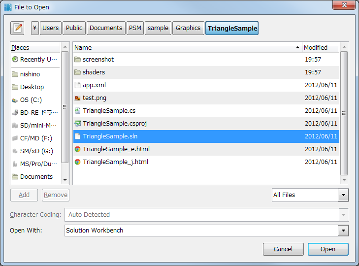

This document explains the settings to be made first after installing PSM SDK.
Contents
This section sets PSM Studio, an integrated development environment.
Note: If anti-virus software is enabled, the anti-virus software may delete the exe file required for execution.
Double click on the PSM Studio icon placed on the desktop to start it up.

The following screen is displayed when PSM Studio is started up.

This section describes how to build and execute a PSM application using a sample.
First, open the solution file.
A solution file has project configuration written in it; it has an extension of sln.
Select [File] - [Open] from the PSM Studio menu, select sample/Graphics/TriangleSample from the dialog box and open TriangleSample.sln.
Sample is installed in the following location by default.
- Windows XP: "C:/Documents and Settings/All Users/Documents/PSM/"
- Windows 7: "C:/Users/Public/Documents/PSM/"
Note: When the language setting of the development PC is English, the Yen mark will be displayed as a backslash.

Execute the build by selecting [Build] - [Build All] from the PSM Studio menu or by pressing the F8 key.
To view the build result log, click on the Build successful section at the lower left of the window and press the [Build Output] button.

The success of the build can be confirmed when Build successful is then displayed at the lower left of the window.
After confirming the success of the build, execute the built PSM application.
First, specify which platform to execute on.
This is an execution example on Windows.
- Place the mouse cursor within the toolbar area, right-click, mark the PSM check box and display the drop-down list.

- Select the "PlayStation Mobile Simulator" from the drop-down list control.
- From the menu, select [Run] - [Debug], or press the F5 key, to start up the application.

The character string output by the application will be output to the [Application Output] window of PSM Studio.
Note: The Application Output window can be displayed from menu - [View] - [Pads] - [Application Output].
- To terminate the application, click on the x button at the upper right of the window or press the Shift + F5 keys.